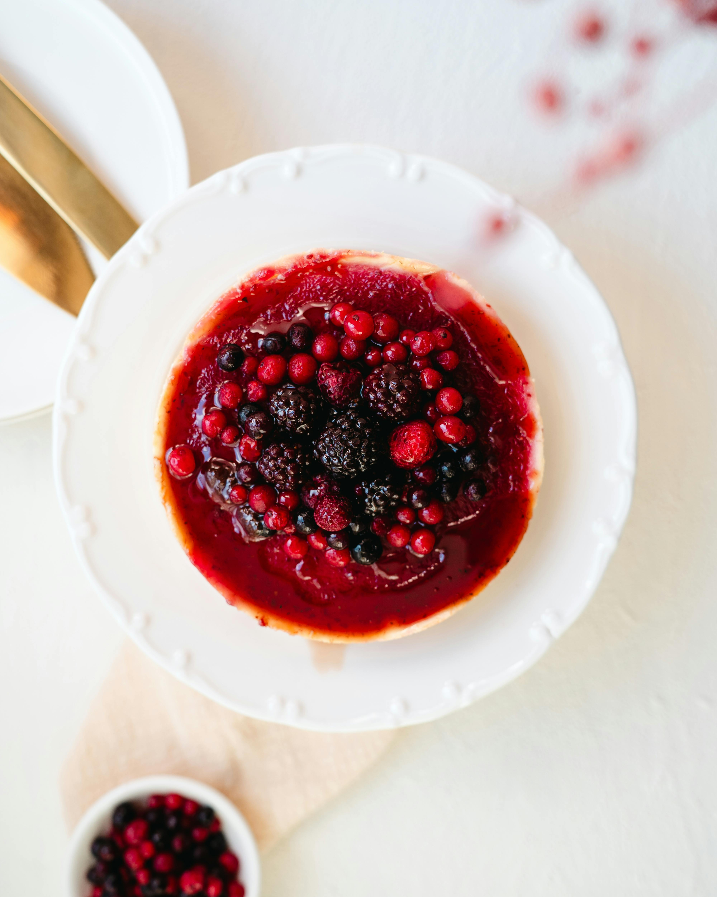

Home
Warm Berry Compote

Description
A warm, sweet treat of berries and syrup that you can put on ice cream or eat by itself.
Ingredients:
- 6 cups frozen mixed berries
- 1/2 cup white sugar
- 1/4 cup orange juice
- 1 1/2 teaspoons finely grated orange zest
- 2 tablespoons cornstarch
- 2 tablespoons water
Steps:
- Stir frozen berries, sugar, orange juice, and orange zest together in a slow cooker. Cover and cook on High until bubbling, about 1 1/2 hours.
- Stir cornstarch and water together in a cup until fully dissolved. Stir into berry mixture. Cover again and cook until thickened, 5 to 10 minutes.
- Serve warm or at room temperature and enjoy!